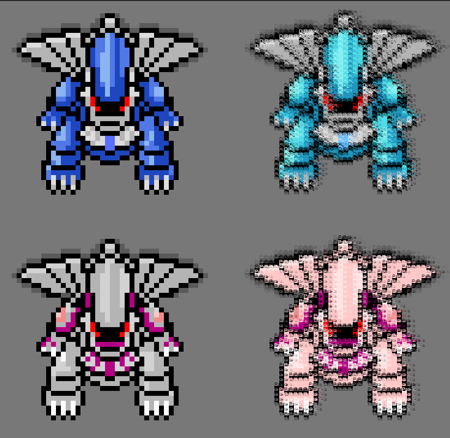
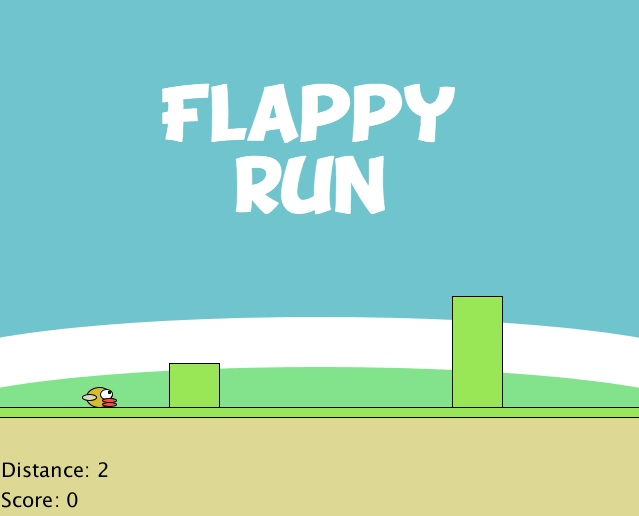

Net Art


my project is about the process of browsing the internet. This project recreates the interface of multiple popular websites and simulates web browsing when bombarded by ads. Theatrification comes into play when attempting to close ads. The ads plea for their lives, guilt you, or reveal their facade and threaten you. The act of closing them is dramatically killing them, with the sound of a knife and scream. The pages flow together as a nonlinear narative where your interactions will decide which page you see next. The narrative ends when an ad tricks you into downloading ad blocker software that's actually ransomware that locks you out of continuing. In terms of visual treatment this is a stylized skeuomorphism that parodies recognizable websites. see code (main) see code (scenes)

I recreated bitmaps of the legendary pokemon sprites from pokemon diamond and pearl using data arrays. One array made from number data and another made from string data. I then translated and remapped the data to their "shiny" variants. click to transform the shinies into text! see code

This piece was inspired by the artist Nick Briz and made using his online tools. It is based on a Dungeons and Dragons campaign where my party jumped into a bag of holding. It is supposed to represent what it’s like exploring and getting lost in an infinite space. Inhabiting the space are rotating wireframe icosahedrons that represent the 20 sided dice that are used to determine most of the outcomes when playing Dungeons and Dragons.

The goal of this piece was to create something simple and interactive in javascript. It is a stripped down version of the game Flappy Bird where the bird can no longer fly. The game has been converted into and infinite runner similar to the no internet connection dinosaur game on google chrome.

This is an abstraction of a clock where I use fish to tell the time. Number of fish is the hour, the intensity of fish swimming is minutes, and the movement of the waves show seconds. Changes in Am and Pm are marked by the water's color. see code